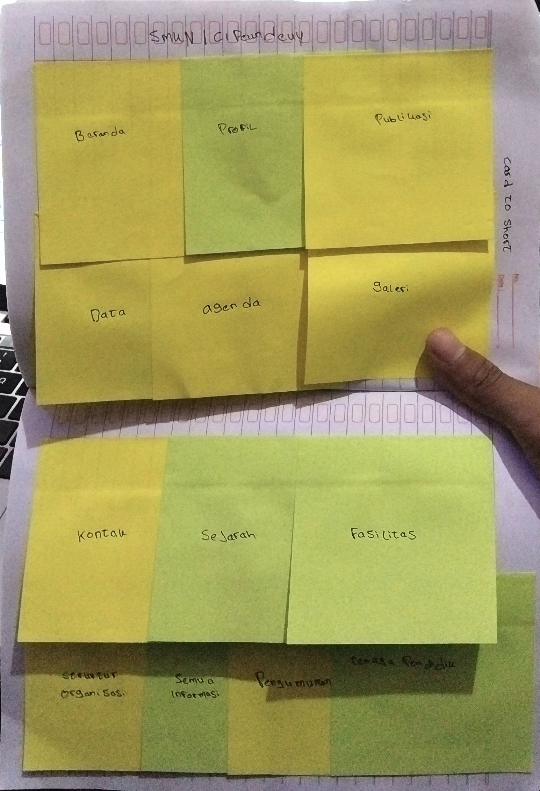
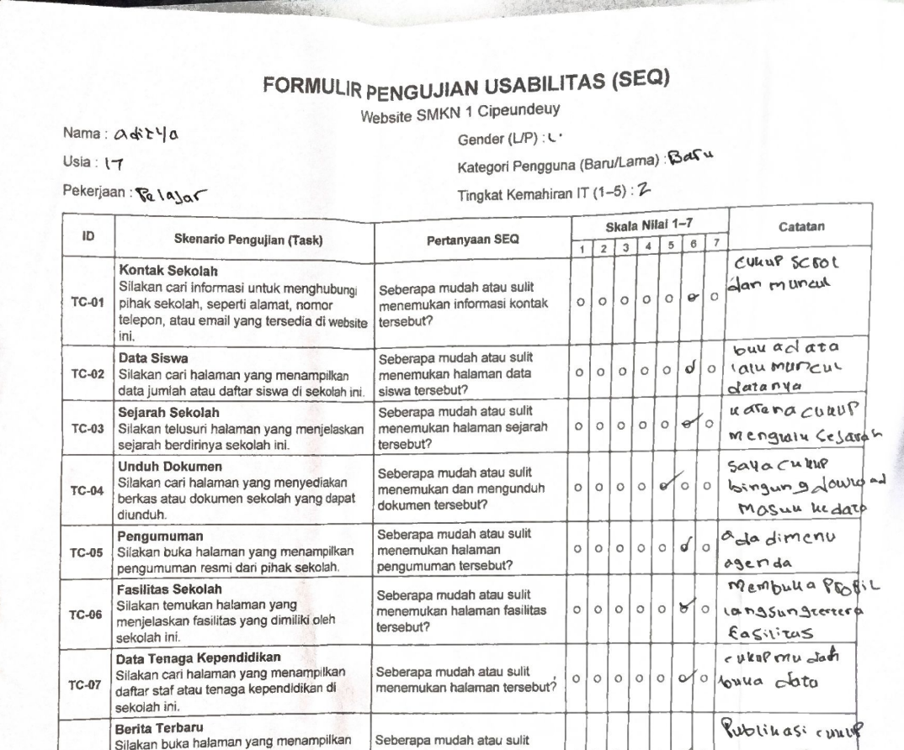
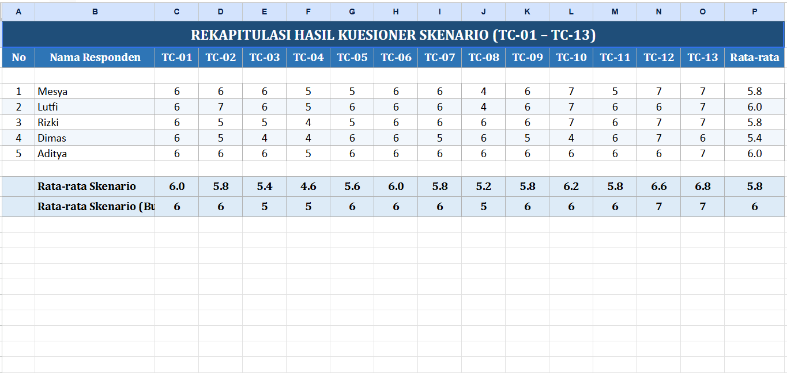
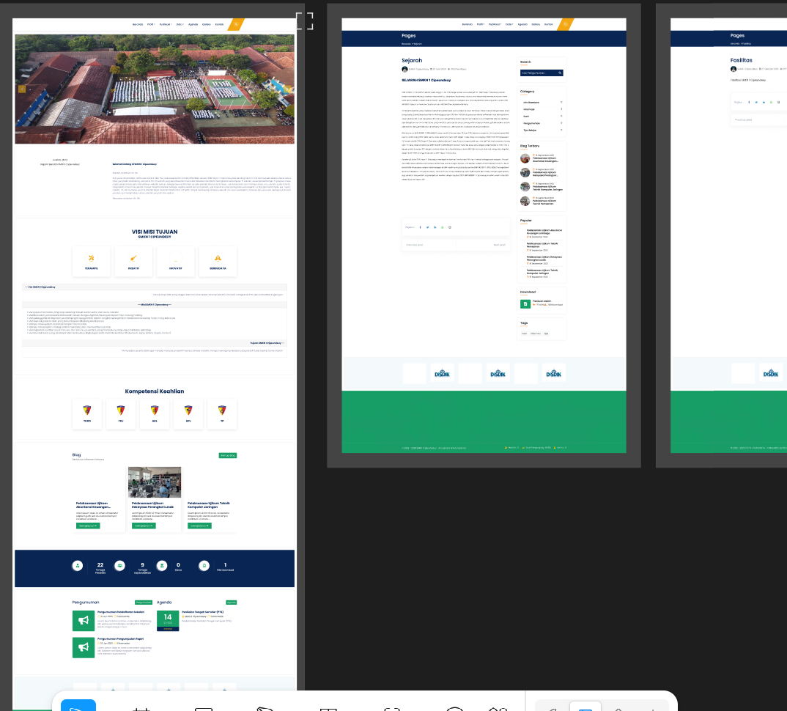
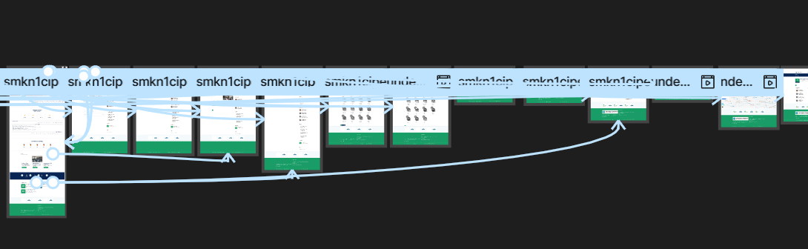
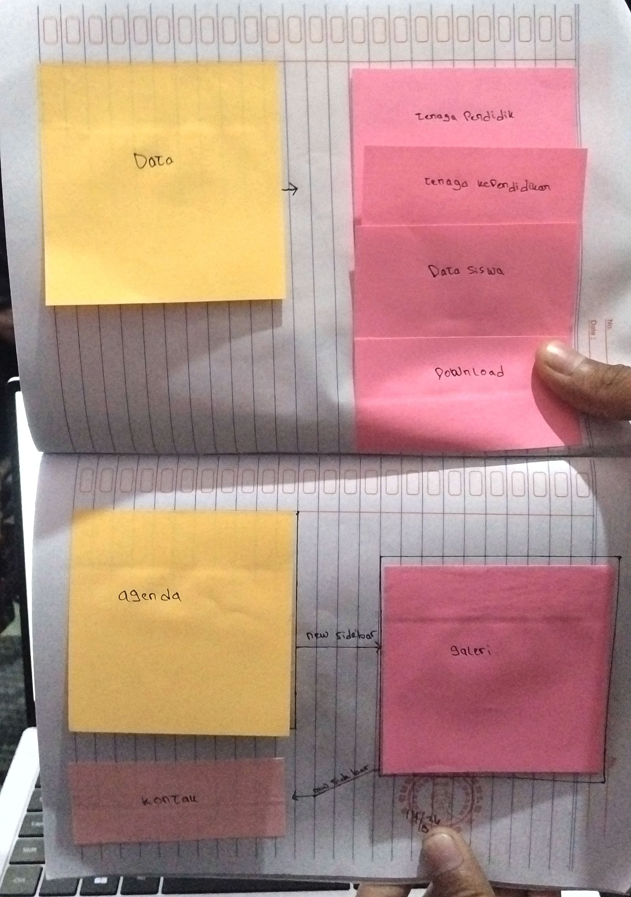
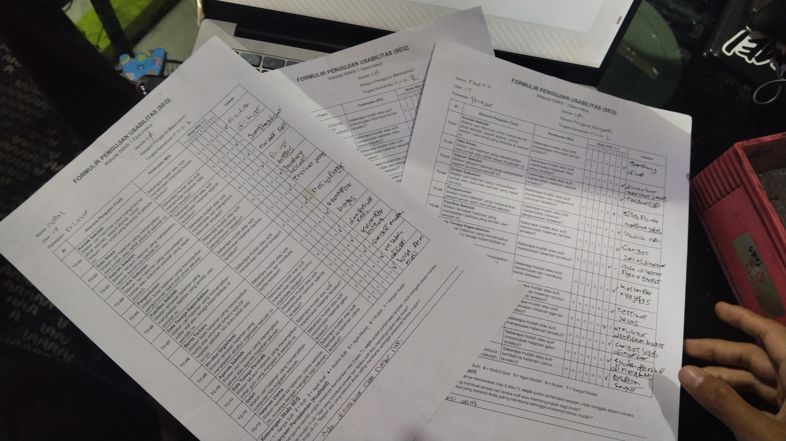
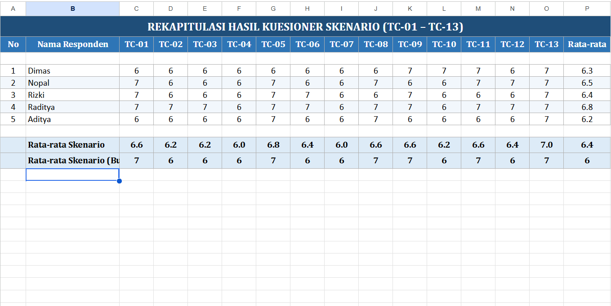
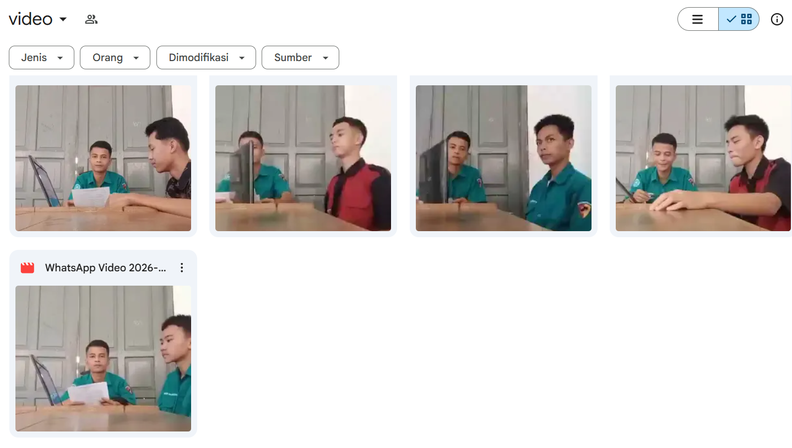

Overview
Konteks masalah, tujuan penelitian, dan alur pengerjaan.
Website SMKN 1 Cipeundeuy memiliki struktur menu yang terlalu dalam, sehingga pengguna kesulitan menemukan informasi penting seperti jadwal pelajaran, pengumuman, dan layanan akademik. Label menu juga tidak konsisten antar halaman, dan informasi prioritas tidak ditonjolkan di halaman utama.
Mengidentifikasi hambatan pengguna melalui card sorting, SEQ, dan wawancara — lalu merancang perbaikan yang terukur dan memvalidasinya lewat pengujian ulang.
Alur Pengerjaan
-
01
Pengujian Pertama
Card sorting, formulir SEQ, wawancara, perhitungan SEQ, dan penyusunan laporan.
-
02
Perbaikan Desain
Merumuskan 3 perbaikan utama, lalu membuat mockup dan prototype interaktif di Figma.
-
03
Pengujian Ulang
Card sorting, SEQ, wawancara, perhitungan, dan laporan akhir. Seluruh perbaikan lolos.
Pengujian Pertama
Mengumpulkan data kualitatif dan kuantitatif langsung dari pengguna.
Card Sorting
Peserta diminta mengelompokkan kartu isi website ke dalam kategori menurut cara pikir mereka. Berikut hasil dari tiga peserta:
| Peserta | Kategori 1 | Kategori 2 | Kategori 3 |
|---|---|---|---|
| Peserta 1 | Profil: Visi Misi, Sejarah | Akademik: Jurusan, Jadwal | Info: Berita, Kontak |
| Peserta 2 | Profil: Sejarah, Struktur | Layanan: Pengumuman, Jadwal | Media: Berita, Galeri |
| Peserta 3 | Tentang: Visi, Misi | Akademik: Jurusan | Kontak & Berita |

Formulir SEQ & Perhitungan
SEQ (Single Ease Question) mengukur tingkat kemudahan tugas dengan skala 1 (sangat sulit) hingga 7 (sangat mudah).


Laporan Pengujian 1
Laporan memuat tujuan, peserta, hasil card sorting, hasil SEQ, temuan wawancara, serta daftar perbaikan yang direkomendasikan.
Buka Laporan Pengujian 1 →Perbaikan
Menerjemahkan temuan menjadi perubahan desain yang konkret.
3 Perbaikan dari Pengujian 1
Menu terlalu dalam, jadwal pelajaran sulit ditemukan.
Meratakan struktur menu dan menaikkan akses jadwal ke navigasi utama.
Label menu tidak konsisten antar halaman.
Menyatukan penamaan label mengikuti istilah yang paling dipahami pengguna.
Informasi penting seperti pengumuman tidak ditonjolkan.
Menambahkan highlight pengumuman dan layanan populer di halaman utama.
Mockup
Mockup menampilkan halaman utama versi baru dengan hierarki visual yang lebih jelas dan navigasi yang lebih ringkas.

Prototype
Prototype interaktif dibuat di Figma untuk menguji alur navigasi baru sebelum diimplementasikan.
Buka Prototype di Figma →
Pengujian Ulang
Memvalidasi perbaikan dengan alur pengujian yang sama.
Pengujian diulang dengan alur yang sama (card sorting, SEQ, dan wawancara) untuk memastikan website sudah lebih mudah digunakan.




Dokumen
Semua artefak penelitian dapat diakses di sini.
Yang Saya Pelajari
Refleksi dari proses penelitian dan perbaikan desain.
Melakukan pengujian usability mengajarkan saya bahwa asumsi desainer sering tidak sejalan dengan cara pikir pengguna. Card sorting membuka wawasan tentang bagaimana pengguna mengelompokkan informasi, sementara SEQ dan wawancara membantu mengukur dan memahami hambatan secara lebih mendalam. Perbaikan yang didasari data — bukan opini — terbukti lebih efektif, dan pengujian ulang menjadi langkah penting untuk memastikan perubahan benar-benar menyelesaikan masalah.